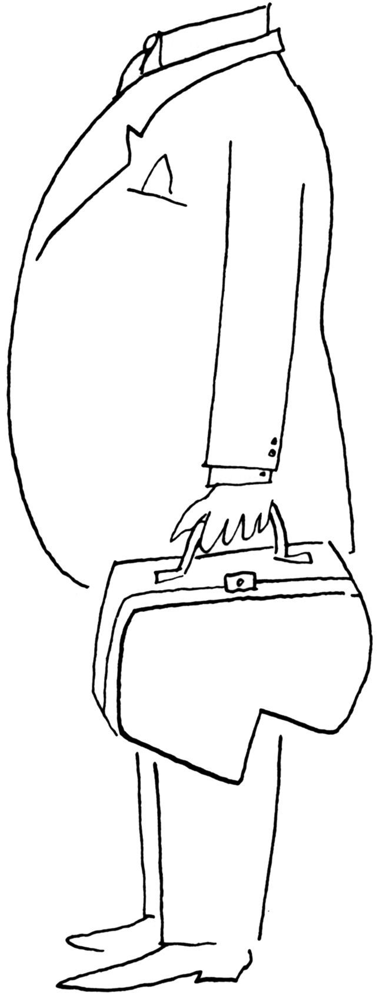

本图来源于《纽约客》1953年8月29日。
Saul Steinberg, Untitled drawing, ink on paper.
Originally published in The New Yorker, August 29,1953.
©The Saul Steinberg Foundation/Artists Rights Society (ARS), New York
在中世纪的欧洲，行人沿街行走时经常会被人的排泄物击中。那时的市民有时会将便壶里的尿液和粪便从窗户倒向当街。污水会在那里滋生瘟疫和疾病，直到街道清洁工清理掉——通常它们被用作肥料。对现代人来说，这种处理方式看起来很愚蠢也很粗俗，尤其是当了解到一些早期文明——像希腊人、罗马人和玛雅人——已经拥有了更好的排污系统时，人们更难理解。这些早期文明已经有了室内管道，甚至有了可清洗的厕所。
为什么要用夜壶来取代室内管道呢？这是因为当时的人们相信了很多显而易见不真实的事情：赤身裸体是罪孽深重的，当一个人赤身裸体时会遭到恶魔的攻击，邪恶的灵魂会让人生病。1罗马人会在他们漂亮的公共浴池里天天沐浴，这一做法被劝阻了，取而代之的是洗手、洗脸，以及清洗身体其他可以公开示人的部位。这种迷信导致了两个显而易见的后果。首先，几乎所有的东西和每个人闻起来都很糟糕。正如一位作家所描述的那样，“农民和牧师、学徒和他主人的妻子，都散发着臭气；整个贵族阶级都臭，甚至国王也散发出臭气，他臭得像头狮子，而王后臭得像一只老母山羊，夏天和冬天都是如此”。2其次，室内浴场最终失修，管道维修技术在民间失传。于是，一段时间内，原始的下水道系统和夜壶便成了解决问题的最佳选择。经历了几百年的时间，“精神”导致疾病的理论才向科学屈服，微生物被确认为导致人类疾病的隐形祸端。
在这里，我无意探讨中世纪的那些想法形成的内在机理，也不想展示现代社会在卫生保健方面所取得的进步。相反，我讲述这个故事是为了引出一个更大的问题：我们现代人的行为，在多大程度上和几个世纪前的夜壶使用者是一致的？每一代人都可以回过头来审视他们祖先的愚蠢行为，找到很多理由来加以解释并自鸣得意。在维多利亚时代，那些医生们提到人们害怕洗澡和鬼魂便会加以嘲笑，但他们仍然会相信自己那个时代的荒谬之论。一些医学杂志警告，女性（而不是男性）在阅读小说时会存在引发疾病、不育甚至精神错乱的危险！3
我们人类喜欢把自己看作是理性的动物。（我们自以为是地称自己为智人，毕竟，人类是明智的。）但我们也会持有许多不明智的信念，并因此而吃尽苦头。数百万人仍然拒绝相信“人类正在造成全球变暖和大规模气候变化”的压倒性科学证据。有人会说，“这是有的国家制造的一个骗局”；也有人会说，“当然，地球正在变暖，但并非人类所为”。结果是，冰川不断融化，海平面不断上升，风暴更加频繁，昆虫传播的疾病激增，每年有数千人死于这些变化。在美国，成千上万的人仍然否认“儿童疫苗不会导致自闭症”的压倒性科学证据，许多父母拒绝给他们的孩子接种疫苗。结果是，在未接种疫苗的人群中，麻疹和百日咳的死亡率上升；在已经被人们认为根除的时候，这些致命的疾病却又会卷土重来。
社会认知是社会心理学的一个主要领域。这个研究领域关注的是：人们如何相信自己所做的事情；人们如何解释、记忆、预测、作出决定、评价自己和他人；以及为什么这些过程经常会产生错误。尽管人类可以正当地宣称自己是地球上最具适应性、最聪明、最成功的物种，但我们仍然很容易产生误解、冲突、错误，出现那些由来已久的种种偏见，以及今天对气候科学和疫苗所持的否定态度。
本章将讲述我们的“社会大脑”的故事。在进化的漫长历史中，“社会大脑”为人类生活带来了巨大的悖论和困境。进化赋予人类以大脑，使我们能够很好地适应小型狩猎采集的群体生活，为人们提供了有效的认知捷径和倾向性，使生活更容易且更安全，使人们倾向于合作和相互关心。然而，当我们对当今这个复杂的、相互联系的、多元文化的星球进行考察时，我们可能会发现这些机制往往会适得其反，导致我们作出错误的决定，固守着我们的偏见，并因偏见和仇恨而相互战斗。
假如你认为可以用我们的理性力量来确定真相的话，当你看到人们因与你的观点相异而对事实采取视而不见的态度时，你便会感到沮丧。在很多时候，我们采用理性、事实和批判性分析，不是为了形成我们的观点，而是为了确证我们已经看到、感觉到或者相信的东西。正如小说家阿娜伊斯·宁（Anais Nin）所言：“我们看到的并非事物的本来面目；而是我们所看到的事物的本来面目。”4在很大程度上，我们如何理解世界取决于我们的直觉、我们的个性、我们感知世界的方式，以及一系列基础性的社会动机。
进化与偏执的大脑
几个世纪以来，哲学家们一直认为人类的认知是完全理性的：所有人都试图尽其所能去做正确的事情，保持正确的信仰，在最大限度地减少痛苦的同时最大限度地享受快乐。
杰里米·边沁（Jeremy Bentham，1748-1832）是这一观点的重要支持者之一。他写道，人们会通过权衡事物给自己带来的幸福感，来确定事物的善恶与对错。5人们通过幸福感计算来确定他们行为或选择的道德定位——好的或坏的、对的或错的。假定我想购买一部新车，在决定购买厂家和车型的过程中，我将会把每个品牌在款式设计、内部舒适程度、发动机功率等方面可能给我带来的快乐相加，然后减去我将来每月需要支付的费用、频繁加油所需的支出等因素可能给我带来的痛苦。这样，我就会选择能够给我带来最大快乐和最少痛苦的型号。在边沁看来，“追求最大多数人的最大幸福”是政府的职责，而且需要有经济制度来加以保证。另外一些人对此也持赞同的观点。边沁权衡幸福的思想，已经成为现代资本主义的基本假定。
普通人会这样去思考问题吗？当然，有时候的确如此。我们中的许多人会采纳本杰明·富兰克林（Benjamin Franklin）有关如何做出明智决定的建议——写下它们的利弊。然而，这种方法要求人们不仅要获取准确、有用的信息，而且还要具备理性思考的能力。但这些情况在日常生活中并不常见。这样讲主要有两个原因。
首先，没有人能够拥有观察世界的“上帝之眼”——可以全知而且无偏地进行观察。让我们以买车为例，我不可能了解这辆车的优缺点，因为我听说过一些有关汽车经销商以及他们的营销策略的糟糕故事。如果这种车是一种新的款式，便根本不可能有长期的维修资料。而且，我对这种车的意见也只局限于我个人的有限看法；我基本上是从广告人员那里听说这种车的，这些人有目的地夸大了车的正面特征。我对这种车的体验也十分有限，只是在经销商的监督之下试开了10分钟，没有在各种危险路况和复杂天气条件下的长期驾驶经历。如果类似买车这样普通的事情可能会有许多信息遗漏或误导的话，那么不妨设想一下，当我们需要做出一些重大决定（譬如，是结婚还是分手，或者选择哪种工作）时，我们将会面临何种困难。
其次，即便数据可用而且可靠，我也没有时间对遇到的每个问题进行全面分析。假如我继续下去，花10个小时来研究和权衡购买这辆车带来的幸福感。但与此同时，我还有许多其他的决定要做：享用午餐时我该做些什么？我该如何修改我的讲稿？哪个求职者最适合聘用？我女儿真的需要那种昂贵的牙齿矫正器吗？我不可能花很多时间列出一天里必须要作出每一个决定的利弊，这一点你也不可能做到。
这就是为什么我们大多数人都是认知吝啬者：我们总是寻求保存认知（心理）能量并将复杂事物简单化处理的方法。我们会利用经验法则去走捷径。我们会忽略一些信息以减少认知负担；我们会过度利用一些信息以避免去寻找更多的信息；或者我们只是按照最初的直觉，接受一个不够完美的选择，因为它已经足够好了。6认知吝啬者的策略可能是有效的，有时我们的直觉可以帮助我们作出较好的决策。但是如果不加以限制，这些策略也会导致严重的偏误。
有关思考的思维是如何进化的 虽然心理学家的研究在过去的几十年里取得了巨大的进展，但是还没有人能够完全理解：大脑如何产生有意识的体验，为什么会产生有意识的体验，或者说大脑如何产生了自我意识。当描绘我们不完全理解的事物时，我们会使用隐喻；我们会将我们不理解的事物与我们已经理解的事物加以比较。隐喻对我们会有帮助，但是如果不加批判地接受，也可能带来误导。
当人们试图解释大脑如何工作时，他们总会使用基于当时科技的隐喻。柏拉图曾做过一个有名的比喻，将人类的精神比作一个驾驭着两匹马拉战车的车夫，一匹马代表理性，另一匹马代表欲望。在19世纪，大脑被比作电报，在20世纪被比作电话总机。随着计算机的出现，心理学家开始把大脑的功能说成可以与Mac或PC相媲美。就像计算机一样，人脑被认为可以存储和检索记忆；偏离理性思维的行为通常被描述为操作系统中的“错误”，或者我们“有限的处理能力”的结果，或者由于压力而导致“认知带宽”减少。7
计算机为描绘某些大脑功能和局限性提供了一个合适的词汇，但我们的大脑并不像计算机那样真正存储记忆或处理信息。此外，由于计算机不必担心未来，不必害怕死亡或被拒绝，不能体验快乐、悲伤、嫉妒或任何其他情绪，因此用计算机来隐喻大脑，对精神生活的描绘是不完整和不能令人满意的。
一个由来已久的隐喻被证明特别具有误导性：约翰·洛克（John Locke）在16世纪把思想描绘成一张白板。这个隐喻把我们的思想、性格和特点描绘成完全由学习和经验塑造的，就像在一张空白纸上作画一样。这个隐喻持续了几个世纪，在19世纪初被精神分析心理学和行为主义心理学热情地加以接受。假如你害羞，那是因为你和你父母的不愉快经历，以及你所受到的奖励和惩罚，使你感到害羞。行为主义心理学创始人约翰·华生（John Watson）声称，只要对环境有足够的控制，奖惩结合得当，他就可以把一个随机挑选的健康婴儿塑造成几乎任何一种人：医生、律师、乞丐或者小偷。8尽管华生确实训练了一个婴儿，使之见到一只兔子都会惊恐，但幸运的是，他再也没有尝试通过长期实验将婴儿变成乞丐或者小偷。
尽管诸如“你可以成为任何你想成为的人”的有关人类可塑性的极端观点在当今社会中依然存在，但是这种观点在心理学家中已经没有了市场，因为有科学证据表明存在遗传倾向。同卵双胞胎出生后分开抚养，在不同的家庭中长大，他们在行为举止、习惯、态度甚至政治观点上仍然存在显著的相似性；在同一个家庭长大的兄弟姐妹在性格上也不会变得更相似。9婴儿带着某种思想进入这个世界，这种思想已经存在大量的预先编程。他们拥有特定气质，拥有对语言和文化学习的某种准备，甚至拥有对物质世界和社会世界如何运作的与生俱来的期望。保罗·布鲁姆（Paul Bloom）和他的助手们发现，三个月大的婴儿如果观看一个简短的木偶表演，他们会在随后去触摸木偶，10因为木偶是有益无害的。这项令人惊奇的研究表明，我们在第一次玩游戏之前就已经有了道德直觉和作出道德区分的能力。
从隐喻的角度来说，我们的思想更像是草图，而不是白纸。经验并不是从零开始的；它对已经存在的东西加以细化，进行修正，并利用个人、文化和社会的影响来给它着色。与生俱来和后天培养相互作用，使我们成为自己。现在就让我们来看看大自然给了我们什么。
狩猎—采集者的思维和人类的普遍性 根据进化心理学，大脑是一个由进化塑造和编程的器官，适应了我们的生物狩猎—采集者祖先在数十万年的觅食生活方式中面临的挑战。11进化赋予人类一些重要的特征和倾向，包括智力、体力、性欲和冒险——这使得我们的祖先能够存活足够长的时间，把他们的基因传给他们的孩子。大多数社会心理学家现在都接受了这个观点，这为我们理解人类思维的方式提供了巨大的启示。
让我们来看一下人类学家罗宾·邓巴（Robin Dunbar）12在深入研究灵长类动物的梳妆习惯时所得到的惊人发现：动物群体的大小与动物大脑新皮层的大小有着密切的关系。新皮质是哺乳动物大脑中最后进化的部分，包含了许多高级功能。对人类而言，它占到了大脑体积的四分之三以上，在它的许多折叠层中有负责高阶过程的区域，如自我意识、有意识的思考、解决问题、自我控制和语言。新皮质超大而且极为复杂，以及它所赋予早期人类的能力，使得我们能够形成比其他哺乳动物更大的合作群体，并通过文化来传播我们的知识。
邓巴发现，我们的大脑容量似乎可以容纳大约150人，我们可以与他们建立起稳定、有意义的关系；当人类群体的数量不超过150人时，他们的功能会达到最佳状态。集体生活提供了巨大的优势，比如食物共享和保护，但是也带来了认知挑战，比如学习和记住某个群体成员的重要信息——他们很容易偷走你的食物或夺走你的伴侣。它需要一个更大容量的大脑来容纳有关群体中其他成员的所有信息以及他们的各种行为方式。这就是为什么，当狩猎—采集部落的成员超过150人左右时，群体生活会变得困难和紧张，部落趋向于分裂成更小的部落。
现代生活改变了上述现实吗？我们可以合理地假设，通过媒体和技术，我们可以轻松地将我们的社交圈扩大到远远超出这一自然限制的范围，现在我们可以通过一个帖子或一条推特联系到成千上万的其他人。不过，问题是：在任何给定的时间点，你到底有多少在线朋友或追随者与你进行有意义的互动？事实证明，很少有人能与超过150人进行双向通信。即使在脸书和推特的时代，尽管我们确实从拥有成百上千的朋友或追随者中获得了一些自尊，但这一限制依然存在。13
了解150人限制的一个有用的含义是，当人类组织不再变得更大时，其功能会更好——他们可以像社区那样运作，而不会像行政机构那样运作。小型学校的暴力和旷课率较大型公立学校要低，人际关系会更好，学习质量会更高。14注意到我们进化中狩猎—采集者思维的性质和局限，可以优化我们的生活和制度。
进化的漫长过程产生了其他的人类普遍性特征、行为倾向、动机和情感系统，不管来自何种文化，所有人类都会表现出来。在所有社会中（包括我们最接近的非人类动物黑猩猩），特定面部表情代表着恐惧、幸福、愤怒、悲伤、厌恶和惊讶等基本情绪。与远亲相比，人们更喜欢近亲，而不是陌生人。人们以家庭为单位生活，在家庭中男性年龄一般比他们的女性伴侣要大。一般而言，男性比女性更具身体攻击性，而且大多数活动都是按性别划分的，女性做更多的保育工作。所有社会都有某种形式的宗教、禁忌词清单和行为准则。在所有的社会里，人们为孩子们制作玩具，讲故事和神话，制作音乐，传播恶意的八卦消息，举行与年龄有关的仪式。这种普遍性的存在，指向维系我们物种生存的群体生活的中心。这些适应无处不在，因为它们促进了群体生活——群体生活对我们的生存至关重要。
人类思维进化论的影响不能被夸大。只是在过去的二十多年里，社会科学家才完全接受这样一种观点：我们的许多不合逻辑、不适应的倾向和动机——以及慷慨、富有同情心和感人的倾向和动机——都植根于我们生活在一小群狩猎—采集者时代的生存价值。但在当今复杂的多元文化世界中，同样的虚构、错误和对理性的背离，对我们以及狩猎—采集者都是有益的。游戏规则已经改变，但我们的进化倾向却没有改变。15
因为我们的生存一直需要其他人存在，所以我们进化成了非常社会化和群体化的人——像蜜蜂一样优秀的团队合作者，像黑猩猩一样优秀的竞争对手。我们与群体成员建立联系、合作、一致和协调关系，同时也通过竞争获得群体内部的资源和地位。我们天生就存在偏见和攻击性，对外界和那些我们认为是威胁的人保持警惕和敌对。我们的大脑发展了快速心理反应过程，以提醒我们注意危险，迅速决定谁是朋友或敌人，并准备好与我们所感知的敌人战斗或者逃离。这些倾向有助于我们迎接来自敌方的石头和棍棒，由此也导致几千年来，人类以部落、“我们与他们”作为基础来看待世界上的冲突、政治分裂、仇恨和战争。16
大脑固有的偏见 正如你所看到的，我们的许多心理怪癖和错误并非愚蠢或者随机错误，也并非我们大脑的自然设定。人类大脑被设计得可以有效地进行工作，但是在这个过程中仍然会出现一些怪癖和偏见。其中一种典型的偏见便是所谓偏见盲点，即认为我们自己比大多数人更客观、更少偏差。我们偏见性地认为自己不存在偏见！这类盲点产生于如下事实，即我们的许多信仰都是内隐的，隐藏在能够意识到的意识之下。当我们面对自己的行为时，我们可以知道这样做的背景，并且可以为之找出理由；毕竟，我们知道自己的感受。但是，当我们看待别人的行为，我们会忽略掉完整的背景。这就是为什么在别人身上很容易发现伪善，然而在我们自己身上却很难看到。那个忙于谴责某位政客有外遇的政客，可能在他的办公室里也在做着类似的事情。我们的偏见盲点让我们可以轻易地对我们所批评的行为作出合理的解释（“他是个道德败坏的混蛋，但我是有权搞外遇的，因为我的压力太大”）。17
更为糟糕的是，我们受制于绝对的现实主义。我们相信自己对现实的主观解释就是现实。我们所看到的是事物的本来面目，而那些人是存在偏见的。这种信念使我们更容易认为，任何不认同我们观点的人都是被误导的、无知的、自私的或邪恶的。历史经常会不幸地显示，如果人们确信自己是绝对正确的，而其他人是错误的，那么他们便很容易做出仇恨和残忍的行为。18
在所有的认知偏见中，证实偏见是最主要的。它关系到我们如何看待世界和处理信息。我们注意、记住、接受各类信息，这些信息证实了我们已经相信的事情，并且倾向于忽视、遗忘、拒绝那些与我们的观点相悖的信息。在马克·斯奈德（Mark Snyder）和威廉·斯万（William Swann）19进行的一项实验中，实验者告诉女大学生们，她们将要见到的那个人或者是一位外向者（好交往的、热情的、友好的），或者是一位内向者（含蓄的、冷静的、冷漠的）。接着，让她们准备一组要向这个人提出的问题，以便对他（她）进行了解。她们会准备什么类型的问题呢？那些认为自己会遇到外向者的学生更倾向于问一些能证实她们期望的问题，比如：“你做了些什么来让晚会活跃？”“在什么情况下你最健谈？”“你不喜欢嘈杂晚会中的哪些东西？”请注意，无论被访者回答什么问题，提问者关于这个人的假设都有可能得到证实。也就是说，一个不特别内向或外向的人在回答第一组问题时会显得外向，而在回答第二组问题时会显得内向。
证实偏见有助于解释为什么人们顽固地坚守那些牢不可破的信仰。他们会寻找一切可能的证据来支持他们所期待的是正确的，所以他们不必“改变主意”。在我们进化的历史中，这种偏见具有适应功能，这将导致我们的祖先持有一种“只要有效，就坚持下去”的策略。然而在当今世界，有时这种策略会将我们引入歧途。
自我中心偏见 人类是一种社会性种群，但我们也是以自我为中心的：我们倾向于把自己置于宇宙的中心。这就是为什么当人们能够将新信息应用到自己身上时，会比认为它只会影响到别人时更能记住新信息的原因。20当人们在生成信息的过程中发挥了积极的作用时，他们会较之被动地接收信息更好地对信息进行回忆。
如果你曾经绝对确信整个世界都看到了你脸上的痘痘，或者你正在谈论你今天糟糕的发型，你就能发现自己内心存有的自我中心偏见。许多青少年害怕上学，是因为一旦他们突然发现自己有某种缺陷，他们会认定“每个人都会注意到”。社会心理学家发现，这种担忧通常被无限夸大。人们感受到的社交聚光灯对自己的照射，比实际上要更为明亮。托马斯·季洛维奇（Thomas Gilovich）和他的同事们在一次实验中把聚光灯效应界定为偏见。21大学生们被要求穿一件引人注目的T恤衫，上面印着巴瑞·曼尼洛（Barry Manilow）[1]的大头照，然后走进了一间坐满学生的教室。之后让被试们想象有多少人注意到他们的衬衫，他们报告大约会有一半的同伴会注意到并对其做出消极的反应，但实际上只有大约20%的人注意到了这一点。
当我们想象别人是如何看待我们的时候，我们可能觉得自己处于聚光灯下，与此同时我们也会觉得我们注意和观察别人比他们注意和观察我们更多——这种自我中心主义，被称为隐形斗篷幻想。例如，在一场实验中，与某个陌生人坐在等候室里的学生后来错误地估计，他们对陌生人的关注比他们认为的要多得多。被试们一直在报告这种隐形的感觉——除非他们穿着实验者提供的T恤衫，他们会声称看到印在上面的一张巴勃罗·埃斯科瓦尔（Pablo Escobar）大头照。这个故事的寓意是，当我们估计别人如何看待事物时，我们很难超越自己对现实的感知。
自我中心偏见会导致我们不加批判地接受错误和谎言。伟大的表演者巴纳姆（P.T.Barnum）曾说过，“每分钟都有一个傻瓜出生”，他的名字现在适用于一种常见的心理现象。巴纳姆效应指的是，当人们被赋予可以适用于几乎所有人的模糊、万能的自我描述时，他们通常会说“难以置信！那就是我！”。这一效应有助于解释为什么会有那么多人错误地相信占星术、算命、乃至一些流行心理学的人格测试的准确性。22假设我考察了你的星相图并告诉你：“在不熟悉的社会环境中你会非常谨慎。你会以乐观和悲观交织在一起的方式看待生活。你的思想是开放的，但当形势需要的时候，你也可以采取坚定的立场。”你会认为我是一个能够读懂星相和你个性的特别有天赋的人吗？哪怕片刻的反思也会提醒你，这个描述几乎适合每个人。但是由于我们倾向于自我中心思考，我们大多数人会觉得这是对我们的完美描述。
为什么坏事比好事具有更大的威力 人类进化的一个奇怪的特点是它倾向于消极：我们倾向于关注潜在的威胁而不是祝福，这种倾向通常被称为消极偏见。我们在人群中找到愤怒的脸会比找到微笑的脸更快。办公室的负面互动比正面互动更重要，员工很可能会记住老板更多的负面言论和行为而不是正面的。消极反馈比积极反馈对情绪的影响更大。坏消息比好消息更容易、更经常地被分享。23
那些购买彩票中奖的人会体验到幸福的高峰，但最终会恢复到购买彩票前的幸福“基点”。24同样的事情发生在失去金钱、考试不及格或其他负面事件之后：我们适应了新的环境，我们的感觉回到了基准线。但与进化理论一致的是，对彩票中奖者和事故受害者的访谈表明，在有过糟糕的经历之后，回到基准线要比在有过美好的经历之后平均花费更长的时间。罗伊·鲍迈斯特（Roy Baumeister）和他的同事发现，消极的事件通常比积极的事件更有力量。他们总结道，从进化的角度来说，这是一种适应性，因为坏事情比好事情影响力强，因为动物对危险、痛苦、失败的警觉程度更高，或者有过其他负面经历者更有可能在威胁中存活下来，从而更有可能遗传他们的基因。25
这种进化的消极偏见，是我们并不总像经济学家们所认为的理性动物那样的另外一个原因。例如，从经济角度来看，我对50美元损失的痛惜和50美元收益的欣喜同样有道理。毕竟，这是一样多的钱。然而实验一再表明，被试在失去金钱时所感受到的痛苦，往往比他们在被给予选择时所获得的同样多的金钱所带来的快乐更大。26人们更倾向于避免损失，而不是试图获得收益，这种现象被称为损失厌恶。
通过对强调损失选择的设计，研究人员和决策者能够影响人们的行为和决策。27在一项现场实验中，我和我的两个学生马克·卡斯坦佐（Mark Costanzo）、马蒂·冈萨雷斯（Marti Gonzales）28用厌恶损失的心理让人们对他们的住房投资进行绝缘处理。在一种条件下，在对每家每户进行考察之后，能源专家为每位户主提供了一份每年他们可以在取暖费上节省钱数的详细具体的说明。在另一种条件下，提供了同样的信息，但却告诉那些户主们他们每天损失多少钱，就像每天从窗户往外扔钱一样。结果表明，“损失”条件下可能出钱为房屋绝缘的户主，是“节省”条件下的两倍。
理解消极偏见给我们指明了一条出路。虽然我们中的一些人赢得了喜怒无常的彩票，并被赋予了快乐的性格，但我们中的其他人也需要积极地寻找生活中的正向因素，让自己接触到他人的美丽、微小的快乐和善良，29正因为这样做不是我们的必然倾向，所以我们可以学会专注于我们感激的事情，为他人做些好事，这些习惯通过产生满足感来抵消消极偏见的影响。30
人脑的两种思维系统 人类的思维系统是按照两种处理方式来划分的：自动的和受控的。自动处理指的是引导我们大部分行为的无意识（内隐的）和不自主的操作：我们的精神系统毫不费力地、毫无意识地进行学习的近乎完美的联想或程序。这种思维方式在动物大脑中已经存在了5亿年——对感官输入做出快速、有效的反应。我们可以同时执行许多自动操作，这就是为什么有经验的司机可以在开车时不自觉地注意到他们所做的无数调整和决策（检查后视镜，对发短信的其他司机保持警惕等）。当我们在纸上读到一些简单的文字，在朋友的声音中发现愤怒，完成“盐和___________”这个句子，或者按照一个人的种族、性别或年龄对他进行分类时，我们都是在进行自动处理。
相比之下，受控处理是我们在处理新问题时有意识的（明确的）努力，比如学习开车，解决复杂的数学问题，试图记住影片的名字，或者回答“你为什么爱你的男朋友？”。这种思维在进化上是最近的，它与语言的发展联系在一起。我们处理一个又一个想法，而不是并行地处理几个想法。诺贝尔奖得主、心理学家丹尼尔·卡尼曼（Daniel Kahneman）31在他颇具影响的著作《思考：慢与快》中描述了这两种系统，并阐述了它们对大量心理现象的影响。
大多数决策都是分两步进行的。我们的自动系统首先产生了对现实的快速而又有污染的评估——基于直觉和感受，一种不假思索的偏好。然后，假如我们具有某种动机，而且能够获得有效的信息，我们会使用更多的控制或深思熟虑来改变最初的印象。例如，当我们判断一个想法是否像我们直觉所认为的那样有用时，当我们确定某种情形是安全还是危险时，或者当我们确认邻居无意而为还是故意使坏时，我们一直都在这样做。
因为受控处理比自动思考需要更多的时间、注意力和精力，容易导致身体疲劳和分心，因此我们更喜欢走捷径。当这种情况发生时，我们的第一印象和冲动可能无法得到纠正。而且，与自动处理不同的是，受控处理不能同时做两件事。这就是为什么很多研究表明，尽管我们会自我中心式地相信自己的能力，但却不可能有效地同时执行多项任务。32（当你尝试发短信和开车时，其中一项行动将会失败。）人类通常对我们的控制处理能力感到非常自豪，但乔纳森·海特（Jonathan Haidt）33估计，有意识的推理——“我们完全了解的词汇和图像流”——只占我们思维的1%左右。另外的99%是意识之外的，但他认为，这个百分比控制了我们大部分的行为。
通过理解进化是如何塑造我们认知能力的，我们可以用更深刻的理解来处理社会问题。现在我们就来谈谈我们大脑中一些特别关联的社会特征。
进化和社会大脑
我一直被别人的魅力所吸引。事实上，我们人人都是如此。没有人存在被诱导去沉迷于八卦的需要，有的八卦甚至是关于那些他们永远不会遇到的人。事实上，我们为此付出了代价：在美国拥有最多读者和广告收入的杂志是《人物》，这是一本分享名人生活细节的杂志。那些名人可能是我们感觉似乎相识的陌生人，但事实上与我们没有任何关系。即便每天上网250次去分享那些八卦新闻，人们仍要为《人物》付费。
我们的大脑与社会关联的另一个标志，是我们会轻易地用人类的术语来解释事物。人们经常在一些不太可能的地方看到人脸：在月球表面，在薯片上，在一片吐司上，或者为人们所熟知的在肉桂面包上显现的所谓特蕾莎（Teresa）[2]修女的脸。我们把随机刺激联系到有意义的模式中，这些模式在很大程度上涉及到某个人，很可能是因为这个人早已在我们的心目之中。34
在有关这种倾向的经典演示中，弗里茨·海德（Fritz Heider）和玛丽安娜·西梅尔（Marianne Simmel）35向大学生们展示了一部简短的动画影片，其中一些几何形状以随机确定的方式出现在屏幕上、在一个大长方形内和它的周围移动。学生们只是被要求观看影片，并“写下发生的事情”。其中一位观察者将影片描述为：“影片显示一个大的实心三角形进入一个矩形。它进入其中并从矩形中出来，每次矩形的某个边角和半个矩形都会形成一个开口。”只有一个人做了这样的陈述。其他所有人都比他看到了更多的东西，他们讲述了一个与人物有关的故事，如下所示：
一个男孩如约和一个女孩见面，这个女孩却同时邀请了另外一个男孩。第一个男孩让第二个男孩走开，第二个男孩却让第一个男孩滚蛋，他摇了摇头。然后，两个男孩打了一架，女孩走进房间又走了出来，她犹豫了一下，最后还是走了进去。她显然不想和第一个男孩待在一起。第一个男孩在身体已经相当虚弱的情况下，靠在房间外面的墙上，跟着她走进了房间。女孩开始担心，在房间的另一端不停地走来走去。
这便是人们在看完一部有关矩形和三角形影片后可能做出的反应。我们的头脑很少满足于原封不动地对所看到的世界作出报告。当被问到发生了什么事情时，我们倾向于自动地编故事。我们会超越了所获取的信息（即便是几何图形、无生命的物体，以及当今世界越来越多的机器人）赋予人类的意图、动机和个性。我们会将R2-D2、Siri和Alexa也视为人类。
对于我们社交大脑的另外一个窗口，不妨做如下设想：当你的大脑漫无目的徜徉的时候会在哪里？它会徜徉到哪里？当你“心不在焉”的时候，你会在想些什么？默认模式网络是一个交互作用的大脑区域，这个区域在不执行某个特定任务或不专注于外部世界时开始活跃。当我们明确地想到某个人的时候，这个网络也是活跃的。这就是为什么当我们走神的时候，通常会把注意力放在一些社会事务上：和朋友一起做计划，对爱人的回忆，和伴侣的冲突，对各色人等的性幻想，或者是另外一些由他人带来的问题。我们在每件事情中都能看到人类的故事，因为人类从未远离自己的思想。36
这里的一个教训是，如果你想推销某款产品，让孩子们对数学或历史感兴趣，或者激励你最好的朋友为酗酒问题寻求帮助，给他们讲一个关于某个人的故事——或者让他们讲一个这样的故事。在戴维·汉密尔顿（David Hamilton）主持的一项实验中，37两组大学生都阅读了有关人类日常行为的陈述，但每组收到了不同的指令。一组被要求记住这些信息，接下来他们会进行记忆测试；另一组则被要求对做出这些行为的人形成一个整体印象。第二组没有被告知随后将进行考试。将会发生什么呢？印象形成组比那些在试图记住事实以应对回忆测试的人，记住了更多的事实。用“人性化术语”来思考可以提高记忆，因为当一个任务围绕着人来思考时，默认模式网络就会参与进来，这反而有助于存储记忆。
社会痛苦为什么如此强烈 “我的心都碎了”、“我的感情受伤了”，尽管心碎和骨折之间有明显的区别，但人类这种表达形式说明，社会痛苦（排斥、羞辱或侮辱带来的刺痛）如同肉体上的痛苦。想象一下你被拒绝或公开羞辱的时候，很有可能你在身体上有这种感觉，你的五脏六腑会产生一种扭曲的感觉，或者，可能你的脸颊上也会产生一种炽热的感觉。
如果不经历分手后的痛苦，你是很难相信这一点的，但对早期人类来说，感受社会痛苦的能力具有生存价值。38我们的大脑需要脑袋来容纳，这意味着人类婴儿出生时一定是相对不成熟的——特别是当他们的头可以通过产道时。当他们的大脑和身体在子宫外发育的时候，他们无法自我生存。因此，他们必须与给自己提供食物和保护的人保持密切的联系，这种与他人的联系对于确保安全和资源获取至关重要。感情上的痛苦，有助于确保人们在社会关系破裂或处于危险之时能够安全挺过；没有经历过分离或排斥的人，不会走得太远。
娜欧蜜·艾森柏格（Naomi Eisenberger）和马修·利伯（Matthew Lieberman）39用功能性磁共振成像（fMRI）扫描了大学生的大脑，这是一个通过追踪血流来识别活跃大脑区域的程序，而每个学生都和另外两个玩家玩了一个三方网络球捕捉游戏。另外两名队员一度把被扫描的人排除在比赛之外，不再把球扔给她。fMRI揭示了被排除在外的学生大脑中的一种激活模式，这种模式与人们忍受针刺、电击或其他实验引起的身体疼痛的情况类似。
这一结果表明，与人类联系有关的心理系统，和生理疼痛信号有关的系统相关联。这就解释了为什么辱骂、躲避和骂人的严重程度不亚于身体伤害。在学校被拒绝或被取笑的儿童，可能已经遭受了严重和持久的影响；事实上，许多成年人对童年被拒绝的记忆要比体罚深刻得多。40
“我们—他们”的部落心态 进化将我们的思想塑造成部落心态，巧妙地将所有人归类为我们的一部分或他们的一部分。我们一看到不熟悉的人，就立刻对他们进行归类：他危险吗？他有敌意吗？他有魅力吗？他能胜任吗？他是冷漠拒绝还是热情邀请？41最后，我们要问：他是我们中的一员还是他们中的一员？
卷入“我们—他们”心态并没有多难。我的儿子乔什喜欢讲这样一个故事：许多年前，当他和他的三个兄弟姐妹还是孩子的时候，他们经常会争夺我的妻子和我的注意力，或者为了最后一块披萨而相争，或者争论该轮到谁来清理洗碗机。在进行这一切时，四个孩子之间有着各自的诉求和方式。然而，当走出家门、在外度假或到了某个陌生的地方，他们便转化成了团队的一部分，一个由我们基于对世界的感觉而组成的家庭。有句古老的贝都因谚语说：“我与我的兄弟为敌，我和我的兄弟与表兄弟为敌，我们都与陌生人为敌。”这句谚语完美地抓住了我们的部落心态如何将世界划分成“我们”和“他们”。
在一项经典研究中，亨利·泰菲尔（Henri Tajfel）42考察了将物体和人们分成不同类别的效果。泰菲尔是一名波兰裔犹太人，曾经参加过法国军队与纳粹的作战，最后被关进了德国战俘营，他对社会认同产生了浓厚的兴趣；后来，在成为一名社会心理学家时，他提出了社会认同理论。该理论说明了我们在宗教、政治、地区、国家或职业团体中拥有最为重要的成员身份（例如，属于浸信会、穆斯林还是犹太教？德克萨斯人还是印第安纳人？消防员还是护士？），借此培养起归属感和自我价值感，塑造出人们对团体内部成员和外人的不同想法。
泰菲尔的研究揭示，一旦把人们分成了不同的类别，我们的头脑就会自动地夸大我们和他们之间的差异，而不是注意那些相似之处。我们倾向于把我们群体中的人“群中人”视为一个独特个体的集合，而倾向于把那些“群外人”看作更为相似的人——“他们都是一样的”，人们经常说，或者“他们看起来都很像”。事实上，“他们”看起来的确很像。这是一个常见的感知缺陷：如果一组照片是亚洲人的或者黑人的脸，那么评价这组照片的白人要比他们是白人时要更难分辨。亚洲人在区分黑人和白人的面孔时也存在同样的困难。你可以想象这种偏见会如何影响对目击证人的准确辨认：白人目击证人更有可能错误地将一个黑人和另一个黑人混为一谈。43
我们对自己部落中成员的评判也比对“他们”的评判要宽容得多。我们不仅认为我们部落中的人更加多样化，而且我们认为我们部落更优秀、更值得。这种偏见带来了骄傲和尊重的感觉：我们扭曲了自己对世界的看法，这样我们的部落看起来比其他人更好，我们感觉会更好，因为我们是它的一部分。
支持我们自己的部落似乎是完全合理的，因为我们常常根据不同的品位、价值观、信仰和政治意识形态而选择加入特定的群体。然而，人类是如此自然地倾向于将世界划分为我们和他们，以至于即使在群体成员构成是基于微不足道甚至毫无意义差异的情况下，也会出现群体偏见。泰菲尔44将完全陌生的人随机分成一组，标记为“X组”或“W组”，这些陌生人在研究过程中从未有过互动，他们的行为完全是匿名的。然而，他们表现得就像那些分享他们毫无意义的标签（X或W）的人是他们的好朋友或近亲一样。在一次又一次的学习中，仅仅根据小组的分配，参与者便会更加喜欢那些和他们有相同标签的人。他们认为这些人的性格更令人愉悦，比那些被分配到不同标签下的人更有可能更好地完成工作。他们甚至会把更多的金钱和奖励分配给自己的“团队”。
为什么我们倾向于基于如此细微的差别作出如此巨大的区分？原因在于我们的DNA。对于狩猎—采集者来说，他们需要对自己部落成员之间的差异保持警惕，这些成员可能是竞争者，而对于局外人，则可能是攻击者。当一个共同的目标对每个成员也都有利时自然会形成联盟，将个人组合成团队。我们自己的部落或团队之间的凝聚力是高度适应性的，因为我们共享资源，享受团队的保护以抵御来自外部持续不断的威胁。
不幸的是，我们经常会让自己的团体成员替我们思考。杰弗里·科恩（Geoffrey Cohen）和他的同事们45招募了大量具有明显自我认同倾向的自由派和保守派人士，要求他们对两个福利改革方案进行评估：一个是慷慨的方案，另一个是为福利领取者提供较少福利的更为严格的方案。正如所料，自由派倾向于慷慨的方案，保守派倾向于更严格的方案。接下来，由自由派和保守派组成的独立团体对同样的方案进行了研究，这些方案被贴上了由民主党或共和党人提出的标签。这一次，团体成员资格完全超越了方案的内容：自由派倾向于他们认为来自民主党的方案，而保守派则倾向于他们认为来自共和党的方案，而不管他们阅读的实际内容如何。客观的政策内容对作出决定没有任何影响。值得注意的是，这种“政党超越政策”的影响在那些了解福利问题的人和不了解福利问题的人中同样强烈。此外，与会者坚持认为，他们的态度的形成有着内在的逻辑，仅以政策为基础——尽管很明显，他们的取舍是由团体归属驱动的。
当我们打开新闻，听着政治专家们为自己政党的候选人或观点辩护的时候，你会发现这种现象反复出现。国会中的许多共和党人花了数年时间反对巴拉克·奥巴马（Barack Obama）完全可以负担得起的医疗法案——尽管该法案几乎完全基于共和党人米特·罗姆尼（Mitt Romney）在马萨诸塞州实施的一个成功方案。阅读那些带有政治倾向的新闻报道，你会发现同样的事情：我们会对任何来自这些新闻的想法进行贬低。
每当球队或团体有利益冲突时，这种偏见就会出现，就像在普林斯顿和达特茅斯之间足球比赛结束后对球迷之间党派关系的另一项经典研究所揭示的那样。这场比赛被认为是两个学校历史上最粗野和肮脏的比赛。比赛结束后，达特茅斯的阿尔伯特·哈斯托弗（Albert Hastorf）和哈德利·坎特里尔（Hadley Cantril）46考察了两所学校，并向学生放映了比赛的影片。学生们被要求在观看影片时要完全客观，并写下每一项违反规定的行为——它是如何开始的、谁有过错。就像科恩的政治支持者一样，两所大学的学生看待这场比赛的方式都有很大的不同：每一方都把自己的同学看成是受害者，而不是违规侵犯的实施者。普林斯顿的学生看到的达特茅斯球员的违规行为是达特茅斯学生看到的两倍。
认知科学家史蒂文·斯洛曼（Steven Sloman）和菲利普·费恩巴赫（Philip Fernbach）47认为，从字面上讲，我们是以群体而不是理性的个体来思考的，特别是在当今这个复杂的世界，我们几乎做任何事情都需要他人的专业知识。可能需要一个部落来抚养孩子，但也需要一个部落来治愈疾病、登上月球，或者设计一辆自动驾驶汽车。从进化的角度来看，依靠他人的知识对于人类来说是十分有效的——当然，除非是在人类不打算这样做的时候。
部落心态是一种天性，但它是不可避免的吗？不一定。我们的历史充满了各种植根于“我们—他们”区别的不断变化的联盟与态度。一个我们认为非常好的盟友来年便有可能成为敌人或竞争对手，反之亦然。正如丹尼尔·鲁德金（Daniel Rudkin）和杰伊·冯·巴维尔（Jay Van Bavel）所指出的，48这样的转变给我们带来了希望，即我们不必对部落主义的未来听之任之。我们可以训练自己去纠正我们固有的自我冲动，即把我们当作朋友，把他们当作威胁。在实验中，如果让小组成员拥有时间和动机去运用理性和思考（去思考惩罚一个小组外的成员是否公平），他们就不那么容易歧视他人或者采取不公平的行动。49
核心的社会动机
人类有许多普遍的生理生存需要，但我们也有某些基本的社会动机，塑造着我们的思维、情感和关系。所有人都在不同程度地追求社会动机，这是由他们的文化、他们的个性以及具体的情境所决定的。当这些动机得到满足时，人们会感觉良好；当这些动机的满足遇到障碍，或者当情境使它们陷入冲突之中时，人们会感受到压力、痛苦，甚至自卑。作为社会认知研究的先驱之一，苏珊·费斯克（Susan Fiske）为我们确认了核心的社会动机。50
归属 在支配社会生活的所有动机中，最重要的是归属：我们渴望与他人建立稳定、有意义的联系。51在与两个彼此看不见的陌生人玩网络球时，即使是轻微的排斥也会在我们的大脑中触发类似于身体疼痛的警报。那些回忆起被排除在外的事件，或者在实验室的一场短暂的游戏中被排除在外的大学生，后来评价自己比那些没有被排除在外的人更差。
这种基础性社会动机意味着：长时间的非自愿隔离不仅会令人感到不愉快，而且在心理上是有害的，会产生抑郁、焦虑和自我毁灭的冲动。被单独监禁囚犯的自杀率比非单独监禁囚犯的自杀率高出许多倍，这确实是最残酷的惩罚。52克雷格·哈尼（Craig Haney）对一些被完全隔离关押多年的囚犯进行了研究，他观察到“他们不确定他们是否存在；如果他们存在，他们到底是谁”。53
在不那么极端的层面上，感觉与社会脱节会导致人们失去调节情绪和控制注意力、行为和冲动的能力。那些遭到拒绝的、孤立的学生在考试中的表现往往较差，他们会食用更多的垃圾食品，而且比那些觉得自己属于同一群体一部分的学生表现得更具有攻击性。54他们更希望与别人交流，但对拒绝也更加谨慎，因此对他人的行为非常敏感。55他们似乎会这样对自己说：“我真的很想被这个群体接受，但我会密切注意他们排斥我的迹象。”
归属的需要促进了一致性与和谐的关系，并形成了我们的许多习俗。让我们想象一下音乐。为什么每一种已知的文化都发展出了某种形式的歌曲、舞蹈、节奏或旋律？这是没有独特价值的进化的副产品吗？考虑到音乐的普遍性，这个答案是不可能的。相反，音乐之所以无处不在，是因为它有能力以一种其他任何事物都无法达成的方式，把一个人的情绪或意图的信息同时传递给许多人。想象一下部落战鼓或军队进行曲，它们使士兵恢复秩序并为战斗作好准备。想象一下大学里体育比赛中的拼搏歌曲是如何涌起的，把成千上万的观众聚集在一起。想象一下出席音乐会的人是如何与音乐同步摇摆的，我们所有人都可以被自己最喜欢的歌曲感动得流泪、欢笑或跳舞。音乐之所以重要，是因为它在情感上把我们自己与他人联系在一起。56
理解他人和准确预测 人类有强烈的动机来准确地感知和理解周围的人和情境，准确地把握人生的航向，并确保我们的人际关系得以优化。我们期盼能够预测将会发生什么，并对所发生的事情做出解释。当这种意义建构的动机受挫时，我们所感受到的不确定性便会令人不安；当情势稳定而可以把握时，我们就能有所准备、适应良好并继续前进。不确定性使我们陷入困境，无法为即将到来的事情做好准备。的确，我们确信有坏事发生，比怀疑有坏事发生要好。
在一项研究中，57被试在连接着一个电击发生器和一个压力水平监视器的情况下，开始玩一个视频游戏。每当他们翻过一块数字岩石，发现下面有一条数字蛇时，他们的手就会受到轻微而痛苦的电击。对一些玩家而言，他们更擅长预测哪些岩石下藏着蛇，因此他们可以预测什么时候会受到惊吓；他们无法避免受到惊吓，但他们知道什么时候会受到惊吓。但对另一些玩家而言，找到一条蛇的概率一直在变化，所以这种电击仍然是不可预测的。那些确信自己会找到一条蛇的玩家，比那些不确定的玩家的压力水平要低得多。
控制 确定性甚至是不幸的确定性，满足了第三种强烈的社会动机：控制的需要。我们希望拥有指导我们行动的自主感和能力并确保事情成功。控制感会让我们体验到幸福，因为它让我们感到自己可以主动且有能力去完成事情。缺乏控制的感觉会令我们不愉快，从长远来看，也是不健康的。布鲁斯·麦克尤恩（Bruce McEwen）58发现，人类和其他处于社会等级较低的灵长类，对自己的生活控制相对较小，他们可以被一个更大的、更具支配地位的猴子或者老板所控制——结果是他们往往比地位较高的同龄人更容易患上与压力相关的疾病，而且死得会更早。
对许多人而言，控制感是幸福的核心。当他们不能进行控制的时候，他们的行为却在显示仿佛他们仍然具有控制的能力。例如，一旦他们选择了自己的号码，他们就更不愿意放弃彩票，而且他们相信在骰子游戏中大力摇掷骰子会导致更大的概率。
被重视需要 人类具有让自己感到有价值的强烈动机，希望自己在所在社区中有社会地位、有积极的声誉。他们希望自己的生活有意义——无论是对别人、对家人还是对周围的世界；费斯克将之称为“自我提升”的动机。事实上，我们对自己的钦佩与我们认为别人如何评价我们有直接的关系。59这种动机会在很多方面表现出来，从试图改善自己，到改善我们的社区，再到积极参与政治，表现出财富和地位的迹象，表现出善意的行为。反之，当人们觉得自己无关紧要的时候——当他们觉得社会不在乎他们是死是活，甚至能够给他们带来稳定和意义的工作都丢掉了——他们可能表现出绝望或者愤怒的抗议。这里仅举一个例子，“黑人生命重要运动”便始自美国黑人社区的呼声，目的是让大多数白人认识到黑人的生命和安全同白人一样重要。60
信任 作为社会性动物，我们不相信别人就无法生存。尽管进化赋予了我们消极的偏见，出现“坏事比好事更有威力”的效果，但我们有强烈的动力去相信世界是安全的、仁慈的和公平的。我们希望别人能够确保我们的安全，善待我们，并为我们提供资源。尽管由于信任而使自己处于弱势的风险，但我们通常确实期望其他人、特别是与我们类似的人不会伤害我们。和所有的社会动机一样，人们在信任他人和世界的程度上也存在差异，部分原因是他们的个人情绪，部分原因是他们童年的早期经历。但是，当别人愚弄或欺骗我们时，我们会感到惊讶、愤怒和伤心。信任别人会使互动更简单、更愉快；它让我们不用担心别人会来找我们麻烦；或者不用担心如果我们暴露了真实的自我，会招致他们的非议。维多利亚时代的小说家乔治·艾略特（George Eliot）写道：“难道孤独会比不信任更令人寂寞？”
正如我们对待其他社会动机一样，我们常常会歪曲我们对世界的看法，以满足我们对信任的渴望，并在一个仁慈的世界里保持我们的基本信念。假如你或者你所认识的人，遭到抢劫、强奸、袭击，或遭受其他创伤，你知道这种经历会令人感到多么迷茫——因为，除了震惊和痛苦的事件，它还会暂时性破坏我们有关世界是安全、公正和公平的假设。我们的信任已经破灭。61
有关社会动机的小结 在本书中，你会看到对这些社会动机的理解如何提供了一个用以观察社会认知和行为的角度。当我们觉得我们属于自己的时候，当我们能够对结果加以预测的时候，当我们可以自由地作出选择并控制自己的时候，当我们开始做那些让我们觉得有价值工作的时候，当我们信任我们所爱的人和同事的时候，我们便能做到最好。62因此，当人们相信一些不真实的事情，或者做出一些看起来很疯狂的事情时，这些核心动机就会以某种方式被扭曲。
在第1章中，我提出了为什么与宗教原教旨主义没有特别密切关系的中产阶级青少年会离家加入恐怖组织的问题。有哪个头脑正常的人会离开一个稳定的家庭去加入ISIS，并很有可能成为一个人肉炸弹？恐怖主义问题专家奥里耶·克鲁格兰斯基（Arie Kruglanski）发现，恐怖分子之间有一些共同之处，有三个核心动机非常突出。63首先，他们强烈希望成为一个更大集团中的一员，为他们提供身份和目标。其次，他们非常需要确定性、秩序和结构；原教旨主义团体的黑白教条为他们提供了明确的答案——他们在一个不确定的世界中所渴望的确定性。第三，属于恐怖组织，消除了他们认为自己的生命微不足道和毫无意义的感觉，这使得他们感到自己的生命意义重大。
我想要强调的是，大多数人都能找到满足这些普遍需求的方法，并能在他们的社会里过上和平的生活。但是，对于那些感到被边缘化和被疏远的人来说，对归属和被重视的需要可能比生命本身更珍贵。
感知与解释我们的社会世界
我们每天都在解释各种各样的事件：为什么有些人的行为如此反常？为什么对面那个有魅力的人不理我？为什么我做得这么差而你最近的论文作业做得那么好？我们的解释往往是合理和准确的，但也容易受到偏见和不确定性的影响。
归因与解释：人们为什么做他们所做的事情 在20世纪中叶，弗里茨·海德（Fritz Heider）和哈罗德·凯利（Harold Kelley）认为，人们的思维方式就像“初级科学家”。64他们可能不像专业科学家那样系统地考察他们对行为的假设，但他们试图理解其他人为什么会这样做。为了达到这个目的，他们会进行因果归因：他们想知道是什么原因导致了乔的刻薄或吉姆的慷慨。这些人总是表现得自私或慷慨，还是情境影响了他们的行为？
假设你和一个朋友正在校园里散步，你看到你的同学玛格亲吻了斯科特。“她为什么会这么做？”你的朋友问你。根据归因理论，人们在回答问题前会做出两种因果解释：一种解释与人的典型人格有关，这是一种性格归因；另一种则与当事人所处的情况有关，即情境归因。玛格会到处去亲吻每一个人吗？如果是这样，你可能会认为她吻了斯科特，因为她是一个非常深情的人。这是一种性格归因，此时你所作出的推断是：一个人的行为方式取决于他（她）的内在原因，比如个性特征或动机。
但假设你知道几乎每个人都会亲吻斯科特，现在你可能推断，玛格亲吻了斯科特，因为斯科特是一个可爱的家伙，这是对她的行为的情境归因。最后，假如玛格只亲吻了斯科特，而没有其他人亲吻斯科特，那么亲吻的这种独特性很可能意味着他们之间存在某种特殊关系。你可能会得出结论：要么他们相爱了，要么斯科特做了值得玛格亲吻的事情。
这种归因分析是非常有用的，它能够帮助我们作出比确定一个人为什么要亲吻另一个人更重要的决定。比如：老师们必须弄清楚学生们为什么会勤奋努力；陪审团必须判定被告无罪或有罪；各个国家必须决定如何对其他国家的挑衅作出反应。在所有这些情况下，我们的归因将产生强大的后果。出于这个原因，社会心理学家已经发现了一些影响我们归因和解释的因素：基本归因错误、自证预言和自利偏差。
基本归因错误 基本归因错误指的是人类在描述和解释人们为什么做自己所做的事情时，倾向于高估个性因素或者与情境环境有关的性格因素的重要性。65在课堂上，你也许会为他（她）的个性找到一个理由：“她变得懒惰了”或“他不像我想象的那么聪明”。因此，你可能会认为你的同学就是这样的人，而不是因为他（她）的父母患病等外部问题而暂时感到痛苦所致。
情境因素起作用的一个关键方面在于，我们在任何时候都在发挥社会的作用。罗斯·李（Ross Lee）、特蕾莎·阿玛贝尔（Teresa Amabile）和朱丽亚·施泰因梅茨（Julia Steinmetz）通过一个巧妙的实验说明我们是如何低估了角色在解释行为方面的能力。66他们设计了一个问答节目的形式，随机将被试分配给两个角色中的一个：（1）提问者，任务是准备有难度的问题；（2）参赛者，任务是回答这些问题。一位观察者观看了这个模拟的智力测验节目，然后对提问者和参赛者的知识状况进行了评估。设想让你自己来扮演观察者的角色，你会有何发现？你很可能会看到某个非常聪明、有知识的人，或者某个相当愚蠢、无知的人。但要注意的是这两个角色如何影响被试的行为。提问者将基于专业知识尽力设计疑难问题：“贝比鲁斯在哪个棒球场击出了倒数第二的全垒打？”“立陶宛的首都在哪里？”“托马斯·杰弗逊的死亡日期是哪一天？”
那些轻松地设计这些问题的提问者，看起来显得很聪明。而那些可怜的参赛者要回答这些问题，肯定会出现很多错误，这让他（她）看起来会有点傻。这正是罗斯和他的同事们发现的。观察者认为提问者比参赛者更有知识。然而，由于每个人都被随机地分配自己的角色，所以任何一个提问者都不可能比参赛者更聪明、更有知识。关键是：即便观察者知道被试是被随机分配到这些角色，但他们仍然没有认识到这些社会角色在判断智力竞赛节目被试时所产生的影响。他们陷入了把所看到的现象归因于个人性格的陷阱。
基本归因错误也会影响到我们个人的浪漫生活。例如，如果你的伴侣做了一些没有头脑的事情，你可能进行性格归因（“我的伴侣是个不体贴的懒汉，我们需要分手”）或情境归因（“我的伴侣一定是在工作中承受了巨大的压力，我们需要一个假期”）。猜想一下哪一种归因会带来幸福的伴侣关系？
归因也会影响人们对一些社会问题及其解决措施的看法。许多美国人认为在超市里使用食品券的人不愿意工作：“如果她再努力一点，她就能找到工作。”或者他们可能会说，一个被定罪的窃贼“一定是一个可怕的、无情的人”。这两种描述可能都是准确的，但也会导致我们忽视这样一种可能性，即我们正在犯基本归因错误。除了性格特征之外，还有许多因素可以解释一个人为什么贫穷或犯罪，包括缺少工作机会、文盲、经济衰退或者成长在一个功能失调的家庭。
我并不是说罪犯不应该为他们的行为负责，我也不是说懒惰、无情或邪恶等性格因素不存在。是的，的确如此！但是，将重点放在个人因素而不是情境因素将导致采取不同的政策来减少贫穷和犯罪。“这个罪犯本质上是邪恶的”这一说法将引导我们支持在监狱上花费更多的钱，以及执行更为严酷的判决政策；认为犯罪的主要原因是由于失业、不良的榜样和文盲，这将导致政府采取诸如增加对更好学校的支出以及对投资贫困地区企业税收抵免之类的政策。
至少，我们对基本归因错误的认识可以提醒我们，我们的归因可能并不总是正确的。通过引导我们考虑情境因素，它提醒我们：我们自己可能陷入了导致我们行为不端的情境之中。我们应该认真对待英国新教改革家约翰·百福特（John Bradford）的座右铭：“若非上帝恩典，我定会遭殃。”
成功与失败归因，以及自证预言 在我们所有的归因中，那些关于成功和失败的归因是最重要的，因为它会影响我们的控制感。当孩子们在学校遇到困难或考试不及格时，他们对自己和他人作出的有关原因的解释，将决定他们是否会延续失败，或者最终是否会取得成功。
当我们对自己的表现作出相应归因时，我们会找到自己内心的原因，将成功或失败归之于我们的个性、能力或努力。当我们对同一事物进行情境归因时，我们会在任务的困难或任务执行的条件中找出原因。如果你数学考试不及格，你便可能断定你的失败是由你内心的某种原因引起的（“我数学不好”；“我没有努力”）或外部原因（“试题难度太大或有些棘手”；“房间太吵了，我无法集中注意力”）导致的。
随着时间的推移，人们养成了解释自己成功和失败的习惯模式，这种被称为解释风格的模式影响了人们的控制感和幸福感。67因为他们认为自己烦恼的原因渗透在自己的生活中，无法改变，并且将永远困扰着他们（“我做过的任何事情都很糟糕，我所做的任何事都无法改变”）。有乐观解释风格的人把不幸的事件归为外在的、情境性的以及他们能控制的原因：“是的，”他们可能会说，“我那场数学考试搞砸了，但是我今后会更努力地学习，并且情况会变得更好。”“另外，这场考试难度太大，我在其他考试中表现得很好。”
你可以看到这些归因如何导致充分的叙述，为我们未来的成功或失败奠定基础。这个机制创造了一种自证预言，它在我们对自身行为做最初归因时便发挥作用，然后以某种方式确认它：“我没有通过那个测试，所以我是愚蠢的。所以我不会学习。因此，我将会失败。看到了吗？我告诉过你我很愚蠢。”但我们也可以创造某种积极的自证预言：“我没有通过那个测试，所以很明显我不够努力。因此，我会更加努力地学习，并确保我了解这些材料。因此，我会做得更好。看到了吗？我告诉过你，我可以。”
自证预言也适用于我们对他人的归因：我们认为他们是愚蠢的，所以我们把他们当作愚蠢的，然后以他们的行为方式来实现我们的预言：他们是愚蠢的。罗伯特·罗森塔尔（Robert Rosenthal）和雷诺尔·雅各布森（Lenore Jacobson）68在学校教师的头脑中植入了一种错误的刻板印象，由此产生的教师对学生的归因倾向影响了孩子们的学习成绩。在这项研究中，实验者首先对一所小学所有的孩子进行了智商测试。测试成绩出来后，每个班20%的孩子是随机选择的。老师们被告知，测试表明这些学生是“能成大器者”，智力会在来年取得显著的进步。这个完全错误的信息导致老师们对他们的一些学生持有某种积极的期望。随后，研究人员只是静静等候。年底，他们又进行了一次智商测试。
总的来说，所有的孩子在过去的一年里智商都有了相当大的提高，但是那些被标记为“能成大器者”的孩子比其他孩子取得了更大的进步。很明显，老师们相信他们会开花结果，会更加关注他们，更加尊重他们，让孩子们对自己的能力更有信心。反过来，孩子们也实现了老师的积极期望。
这一影响主要出现在一年级和二年级。这表明，当孩子们刚入学时，他们特别容易受到老师期望的影响，而且他们的学习自我概念仍在形成中。在高年级，分数差异较小或不显著。然而，对那些属于少数群体的学生而言，教师期望的影响更大，而且会跨越更多年级，这表明少数群体的地位导致了儿童对教师对待自己的方式特别敏感。69
背景对社会判断的影响
社会认知的一个基本原则是，一切判断都是相对的。我们对某个人或某件事的认识和思考取决于它的社会背景。然而，“社会背景”是一个相当宽泛的术语，所以在此我想考察一下，外部世界如何进入我们大脑并影响我们的决策和解释方式。
对比效应与社会比较 一个物体可能看起来比它自身好，也可能比它自身差，这取决于我们用什么来衡量它。大多数销售人员都明白这一点，据此，有些人会对此采取行动。假定我陪你去找某位房地产经纪人买房子。第一站是一栋两居室的小房子，坐落在一小片空地上。这栋房子需要一层新油漆，内部乱七八糟，厨房的油毡皱巴巴的，起居室的地毯破旧不堪，气味难闻。当这位房地产经纪人告诉你要价时，你惊呆了：“天哪！买这个地方他们竟然要价这么高？谁会愚蠢到为这间小屋支付这么一大笔钱？”当然不是你，可能也不是其他人。现在房地产经纪人带你去一栋普通的房子。你觉得之前看过的那栋破旧的房子会影响你对第二栋房子的评价吗？你说对了。破旧的房子当然是一个诱饵，旨在影响你将要作出的决策。
在大多数餐馆的酒单上，你通常会发现各种葡萄酒的价格差距很大。假定有四款美罗干红葡萄酒，价格分别为14美元、35美元、70美元、170美元。虽然这家餐厅可能卖不出一瓶170美元的葡萄酒，但它的存在却使其他葡萄酒看起来更便宜。而且由于大多数人不愿意购买价格单上最便宜的那款，所以在战略上看放置昂贵得惊人的诱饵，使得餐馆有可能提高价格排在第二和第三两款葡萄酒的价格，向你收取的费用比它们的价值要高得多。70
使用这种诱饵的原理正是对比效应：在人们看来，好坏的变化不过是与类似的东西对比所形成的。与价格过高的简陋窝棚相比，那栋正常价格的普通房子看起来很不错；与170美元一瓶的葡萄酒相比，70美元一瓶的价格似乎正好。当某种东西与类似的但略逊一筹（或美丑，或高矮，或贵贱）的东西相比时，它被认为比通常情况下更漂亮、更高，或更便宜。在乔纳森·斯威夫特（Jonathan Swift）的经典小说《格列佛游记》中，那位身高正常的主人公，在与小人国的居民一起旅行时被认为是巨人，而在与布洛丁纳格真正的巨人一起旅行时则被当成了侏儒。
对比效应也可以在战略上得到很好的应用。旧汽车经销商可以在停车场放置破旧的旧车，以提升邻近汽车的外观。总统候选人可以选择资历较低的副总统竞选伙伴，以提高人们对自己所拥有总统品质的正面认知。我们往往不太注意上下文的影响，更不用说质疑所提出的替代方案的有效性了。这增强了政客、广告商和销售代理等“情境创造者”的力量：他们所创造的情境会影响我们的感知和判断，诱使我们做出原本可能不会作出的决定。
我们对自己的重要判断也会受到对比效应的影响。关于我们自己的最有力的信息来源之一是社会比较，这是一种通过将我们自己与他人比较来评估我们的能力、成就、态度和其他特征的过程。根据我们将自己与谁进行比较，结果可能是有益的、令人欣慰的、鼓舞人心的，也可能是令人泄气的。这就是为什么许多高中毕业时的佼佼者进入一所精英大学后，发现自己被其他高中毕业时的佼佼者们包围着，他们的自尊心会有所下降的原因。他们不再是最聪明的孩子，仅仅是在新的环境中保持了平均水平，便可能感到自己不够聪明；71同样地，当年轻女性在媒体上看到了模特的图片时，也可能会认为自己不如普通女性有吸引力；72而今不少人患上了“脸书忧郁症”，这种似是而非的沮丧情绪来自于对朋友审视以及对他们完美生活的了解——他们总有度不完的假期，可爱的小狗，完美的家庭，美妙的聚会等等。73
索尼娅·柳博米尔斯基（Sonja Lyubomirsky）曾经观察到，社会比较是导致缺憾和不满情绪的主要原因。毕竟，不管你的处境有多好，总有一些人可以提供一个对你不利的对比——一个更强壮的身体，更高水平的运动技能，更多的脸书朋友，更高的薪水，或者更大的游艇。社会比较是不可避免的，它们会不自觉地、轻而易举地出现。在对快乐的人和不快乐的人的社会认知进行比较时，柳博米尔斯基发现，最幸福的人不是通过关注他人的行为来评价自己，而是通过调整和参考自己的内在成功标准来评价自己。74我们还可以通过培养卡罗尔·德韦克（Carol Dweck）所谓的成长心态来避免与他人进行痛苦的比较。德韦克所说的成长心态指的是，人们所持有的对人类成长能力的信念和对自我提升的承诺。她说：“我们可以把别人看作是灵感和知识的源泉，而不是因此而觉得自己存在某种缺憾。”75
图式与启动 在人类努力理解世界和解释他人的行为时，往往会遇到一些模棱两可的情况，面对模棱两可的情况，人们会讲出不同的故事。是什么影响了他们所讲的故事？
作为认知吝啬者，我们倾向于通过有关世界的图式和心理模型来组织和检索信息。图式可以是刻板印象、类别、期望、态度和心态。当我们文化中的大多数人都拥有共同的图式时，每个人都以他们对社会信息的理解方式来发展习惯倾向。我们对自己和世界的记忆、感觉和信念最终形成了一个完整的整体。因此，我们中间的一些人会通过玫瑰色的透镜来看待这个世界（正如我们所看到的，他们持有一种乐观的解释风格），而另一些人则以敌对或压抑的方式来看待这个世界。这些与我们自己有关的图式引导我们以个性化及与之相应的方式来解释我们周围的世界。
图式可以使用微妙的线索，通过启动来激活我们的思维。由托雷·希金斯（Tory Higgins）、威廉·罗尔斯（William Rholes）和卡尔·琼斯（Carl Jones）所做的一项经典研究揭示了启动在对他人印象形成中所起的作用。76在他们的实验中，大学生们参与了两个明显不同的研究项目：一个是关于感知的研究，另一个是关于阅读理解的研究。第一个实验针对的是不同的人格特质；一些学生被要求记住一系列积极特质（敢做敢为的、自信的、独立的、坚持不懈的），而其他学生则被要求记住一系列消极特质（鲁莽的、自以为是的、孤傲的、固执的）。五分钟后，学生们阅读了一段关于唐纳德（Donald）这个虚构人物的文章，并回答了有关他的问题。
这是一段含糊不清的文字，描述了唐纳德所做的事情。根据你个人的观点，可以被解释为敢作敢为或鲁莽（例如跳伞），自信或自以为是（他相信自己的能力），独立或孤傲（他不依赖任何人），坚持不懈或固执（他不经常改变主意）。随后，要求学生们用自己的话来描述唐纳德，并评价他们对他的喜欢程度。当学生们以阅读负面特质启动时，他们对唐纳德的描述是负面的，并认为他不那么讨人喜欢。
大多数时候，就像唐纳德的故事那样，事实会受到解释的影响。启动研究表明，最近的事件或线索在当前的环境中，会以可预测的方式影响我们的感知。在一项研究中，警察和少年缓刑监督官读到了一个关于某个少年的故事，这个少年的种族不明，但他被指控犯罪。有一半的警官毫不掩饰地使用了与黑人有关的词语（“居家男孩”、“哈莱姆”），另一半则用了中性词语。第一组人认为孩子年龄较大，罪责更大，更容易惹上麻烦，他们建议对他进行更为严厉的惩罚。仅仅是种族图式的激活，就会使这些专业人士将某个少年视为麻烦制造者。77
媒体报道的故事也让观众把它们视为当今最严重的问题。78通过使某些问题和概念在精神上可以被理解，媒体确定了公众的政治和社会议程。正如政治学家伯纳德·科恩（Bernard Cohen）79所观察到的，“大众媒体在告诉人们该怎么思考方面可能并不成功，但在告诉读者该怎么思考方面却非常成功”。
首因效应的力量 社会背景对人们思维影响的另一种方式，看似简单却相当有效。事实证明，“先入为主”是一种不错的建议，我们从一个人那里最先得到的信息具有特别的影响力。在早期的一项实验中，所罗门·阿希（Solomon Asch）80让大学生阅读如下描述性句子，然后给每个句子所描述的人打分。
a.史蒂夫是一个聪明、勤奋、冲动、挑剔、固执、嫉妒的人。
b.史蒂夫是一个嫉妒、固执、挑剔、冲动、勤奋、聪明的人。
这两个句子包含了与史蒂夫相关的完全一致的信息；然而，第一个选项把积极的特质放在首位，而第二个选项把它们放在最后。当史蒂夫被描述为第一个句子时，学生们对他的评价更加肯定。这被称为首因效应，指的是前期获取的信息比后期信息有更大的影响力。当你在社交媒体、工作或研究生申请中对自己进行介绍时，你首先使用的词汇，可能与你最想使用的词汇起到同样的作用。当然，首因效应也会产生误导；在现实生活中，人们首先了解到有关你的信息可能并非有关你的最重要信息。然而，在他们听到的有关你的叙述中，什么是最重要的，往往取决于人们对你的反应。因此，如果你在一份求职申请书中提到物理学是你在大学里最喜欢的科目，雇主很可能会形成有关你的不同的印象——科学的、勤奋的，也许有点书呆子气。当然，你必须在求职书的开头而不是结尾部分把这个事实说出来。
首因效应以不同的方式反复得到了证实。在爱德华·琼斯（Edward Jones）和他同事的实验中，81被试观察到一个人正在进行一项由30个项目组成的智力测验。在每一场测试中，受测者都会正确回答30个项目中的15个。然而，有时受测者一开始就“活跃”起来，正确地回答了很多问题，然后表现下降；而在其他时候，受测者一开始很不活跃，起初只回答了几个问题，随后正确地回答了后面的项目。尽管他们作出正确回答的项目都是相同的，但开始时表现“活跃”的学生仍被评价为比那些一开始时“不活跃”的学生更聪明。
当然，有时我们也不会无所作为，只是被动地观察我们的评判对象；我们会与他们互动并积极地影响他们，我们可能持有影响我们评判的动机。老师们在评判学生智力的同时，也在教育和影响他们所评判的对象。乔舒亚·阿伦森和爱德华·琼斯82在一项实验中发现了首因效应有趣的例外现象，当时大学生们正在指导着一些参与者尝试解开一组谜语。其中一半的指导者得到承诺，如果他们能够提高参与者的成绩，便会得到奖励；另外的指导者则被告知，因为他们提高了参与者的猜谜能力，自己也可以解猜字谜，这样他们会在随后的猜谜活动中表现得更好。在指导猜谜的过程中，被试们按照脚本表演。其中一半在开始时表现非常好，然后状态变差；其余的一半开始缓慢，然后状态越来越好。他们最终的总成绩是一样的，只是得分方式不同。那些被激励去最大限度地提高参与者成绩的指导者，在一开始他们表现好的时候，会认为他们更聪明，这就是首因效应在起作用。他们希望帮助参与者取得好成绩，在最初的几次试验之后，他们得出结论：他们指导的学生很聪明——不论他们后来的表现如何。但是，那些被激励会提高自身的猜谜能力的指导者，却将猜谜能力更聪明的评价给予了那些开始时成绩不佳但最终表现良好的指导者。换句话说，与快速启动相比，他们对业绩的提高印象更为深刻。
这些发现表明，如果教师们致力于学生的长期发展，而不是专注于他们在下次考试中的表现，他们应该拒绝基于第一印象作出的便捷判断。阿伦森和琼斯的实验表明，首因效应并不是不可避免的，特别是当我们被激励去仔细注意的时候。然而，认知的吝啬倾向却意味着第一印象的形成是快速而持久的。
便捷式判断和记忆：引导我们的社会世界
正如我在本章开头所指出的，我们常常依靠自动处理，通过我们的直觉来理解信息的大量涌入。为了帮助我们有效地完成这个任务，我们的大脑通常依靠便捷式思维，这种思维活动提供了指导解决问题和作出判断的经验法则。83便捷式思维不需要有意识的思考，我们会在日常生活中盲目地将它们用于解决手头的问题。通常，它们是有效的捷径，但就像人类所有的认知技能一样，它们有时会把我们引入歧途。
让我们来看看三种最常见的便捷式判断：代表性便捷式判断、易得性便捷式判断和情感便捷式判断。
代表性便捷式判断 当我们专注于表面相似性进行推论时，我们就是在使用代表性便捷判断。我们知道高质量的产品往往很昂贵，因此，如果某样东西价格很高，我们便推断它比便宜的东西好。我的朋友奥利弗（Oliver）总是会选择一种昂贵的葡萄酒，可以假定他喜欢这款酒胜过喜欢较为便宜的酒。在众多可能关注到的信息来源中，他所使用的只有一个，即价格。
同样，在选择谷类食品时，我们倾向于依靠它的包装来推断它的健康程度。魅力幸运星麦片的包装盒是红色，上面装饰着一个卡通的妖精糖，在粉色和紫色的棉花糖碎片上撒着闪烁的星星。但是，100%纯天然的格兰诺拉麦片也装在一个盒子里，包装盒上印着一碗浅棕色的谷类食品，背景是未经加工的谷穗，它的名字叫“天然”。难道它比魅力幸运星麦片更健康吗？84消费者报告发现，与人类有着非常相似的营养需求的幼鼠，饮食了魅力幸运星麦片后会茁壮成长，而饮食100%纯天然麦片实际上阻碍了它们的生长。盒子上的说明准确地报告了所有可能导致不健康的内容，但包装本身却错误地将这些内容说成是健康的。这就是现实中的代表性便捷判断。
易得性便捷判断 易得性便捷判断是这样一种倾向，即预测一个事件的可能性，或判断它的风险有多大，根据的是那些容易记起的具体的例子。在美国，死于鲨鱼袭击的人多，还是死于飞机坠落的人多？死于火灾的人多，还是死于溺水的人多？是谁杀了更多的美国人，是恐怖分子还是幼童？绝大多数的人回答是，鲨鱼袭击和火灾造成的死亡比飞机失事和溺水造成的死亡更为普遍。但这两个答案都是错误的。尽管美国普遍存在着对恐怖主义的恐惧，但目前的统计数据显示，与死于恐怖袭击相比，人们更有可能被一个蹒跚学步的孩子枪杀。然而，错误的答案在我们的头脑中更“易得”，因为我们已经看到或可以想象到可怕的鲨鱼、恐怖分子和火灾的生动画面。最容易想到的事情都会直观地感觉更有可能发生，即使这些事件是极为罕见的。我们把这些事情在记忆中的易得性误作它们在世界上出现的频率。鲨鱼的攻击可能很罕见，但它们是可怕的，很容易记起。
启动效应可以增加我们易得的图像。如果你要求人们估计每年在美国发生的暴力犯罪的数量，你会得到完全不同的答案，这取决于人们使用了多少媒体，看了什么节目。电视新闻通常是基于“只要流血，便会导致死亡”之类的所谓常识，最近发生的灾难、枪击或其他悲剧都会引起电视评论的关注。因为犯罪和暴力在媒体中扮演着如此重要的角色，而且往往被描述得如此糟糕，观众对犯罪的认知能力也会提高。这就是为什么那些喜欢看犯罪剧和电视新闻的人往往会大大高估犯罪率。他们看得越多，便会越加担忧。85
易得性便捷判断也会影响到我们如何看待自己和我们所相信的东西。如果我们能够顺利地或容易地记住和处理信息，它对我们来说似乎比我们必须努力评估它的准确性更“真实”。在一个简单的演示中，阅读用清晰易辨的字体打印出来的论点的人，比阅读同样内容但用模糊字体打印出来的人更容易相信他们所读过的东西。86与说同一件事但不那么恰当的说法相比，押韵的说法或“脱口而出”的说法被认为更加真实。87
我们对一个声明或想法越熟悉，它越可能对我们发生作用。仅仅是一遍又一遍地听到某种说法、哪怕是最卑鄙的谎言，只要让人们更加熟悉它，便会增加他们的信念——如果某种说法为人们所熟悉，它就一定是真实的。易得性便捷判断通常是良性的，也是实用的。然而，当它导致我们不是根据某项说法的逻辑价值，而是根据其检索的方便程度来决定什么是正确的时候，它便存在明显的缺陷：互联网让人预料不到的一个危险便是，从阴谋论到伪科学的医学建议，只要不停地重复，便会大行其道。正如威廉·詹姆斯在1890年所讲过的：“没有什么会如此荒谬，如果重复得足够多，它便不能不被认为是真理。”这一说法源自对纳粹宣传机器的观察，而这种宣传不过是“弥天大谎”。
情感便捷式判断 我喜欢这个人吗？我对这个想法有何感想？我们的感觉是有价值的信息来源，所以当我们利用自身的感觉来塑造我们对人或想法的评价时，我们使用的是一种情感便捷式判断。如果你心情不佳，你对求职者的评价可能比心情很好时所作出的评价更为消极。然而，如果在做出判断之前有什么事情让你意识到自己的心情好或坏，那么你的心情就不太可能影响到你的评价。88
我们对他人的持久情感影响着我们如何判断他们的行为。安东尼·普莱特肯尼斯（Anthony Pratkanis）曾要求大学生们确认两种关于前总统罗纳德·里根（Ronald Reagan）的说法中哪一种是真实的：
a.里根在尤雷卡学院的成绩保持在平均水平。
b.里根在尤雷卡学院的成绩从未超过平均水平。
很少有学生真正知道里根的大学成绩怎么样，他们的答案取决于他们对他的感觉。喜欢里根的学生更有可能认为他是个A等级学生，而不喜欢里根的学生则认为他是个C等级的学生。这种现象有时被称为光环效应，这种效应同样是一种偏见。在这种偏见中，一种有利或不利的感觉会影到对一个人的特定推论和未来的期望。我们同样会反观自身，考虑个人的感受，以预测他人会如何行动。如果我们不了解有关的人，我们通常会假设他们具有和我们一样的感觉和行为，并且在任何问题上都会同意我们的看法。
情感便捷判断是有益的，例如，可以帮助我们在不确定或危险的情况下快速行动。但它也可能通过阻止我们对风险进行准确评估来误导我们。一项巧妙的实地研究旨在考察法国人民如何应对多年前发生的“疯牛”危机。疯牛病会影响大脑，食用受污染的牛肉会导致传染。每当报纸报道“疯牛病”的危险时，次月牛肉的消费量就会下降。然而当新闻在做同样危险的报道，但使用的是这种病的技术名称克雅氏病和牛海绵状脑病时，牛肉的消费量便会保持不变。“疯牛”这个令人担忧的标签使人们在情感上进行推理，并高估了危险。毕竟，这是一个“疯牛”的形象——一个安详的动物在疯狂地奔跑！人们在认知上会高度关注。但是在整个危机期间，仅有6人在法国被诊断出患有这种疾病。89
我们何时会使用便捷判断 幸运的是，我们不必依赖认知捷径。在购买谷类食品时，我们可以仔细阅读谷类食品盒上的成分或者查阅网页；在投票时，我们会仔细思考这样一个问题，考察政治家的记录和成就；我们可以通过从我们日常中很少用到的公正来源收集证据，努力避免证实偏见。通过了解这些便捷判断如何引导我们作出错误的选择，我们可以采取措施来加以抵消。心理学家已经确认了一些条件，在这些条件下，我们更可能依赖便捷判断而不是理性的决策：90
●当我们没有时间仔细考虑某个问题时；
●当我们信息冗余，无法充分处理信息时；
●当相关问题对我们不太重要时；
●当我们缺乏作出合理决策所需的知识时；
●当我们让自己的情绪和一厢情愿的想法阻碍我们的时候。
心理时间旅行：预测未来和回忆过去的偏见
有时候，人们似乎会把一半的时间花在思考过去，另一半的时间用来想象未来。无论思考过去还是想象未来，我们都可能出现偏见。
积极预测 预测某些结果如何，会让我们确定自身设定的目标和我们愿意承担的风险。事实上，无论何时我们想要得到某种东西（无论是三明治、工作还是离婚），我们基本上都在打赌，得到了它会让我们快乐，或者至少让我们更快乐。然而，我们对与自身有关事情的预测经常会大错特错。91无论是积极的还是消极的，我们都会高估未来发生事件可能带来的情感影响，以及我们所做反应持续的时间。
在一项研究中，大学生被问到，他们被随机分配到一个他们认为“理想”或“不理想”的宿舍后，他们会感到有多么快乐或者不快乐。学生们预测他们的宿舍分配将对他们的整体快乐水平产生巨大的影响，被分配到一个不受欢迎的宿舍将会导致他们在随后一年里的满意度降低。事实上，一年之后，无论住在哪里，每个人的幸福水平几乎是一样的。那些不受欢迎的宿舍并未出人意料地住满孤傲冷酷的人。学生们在预测他们未来的快乐感时，把注意力放在了错误的因素上；他们更加重视宿舍的结构和位置，而不是有谁住在里面。但事实上，是人们的感觉让某个地方变得有趣或者不愉快，所有的宿舍都会有可爱的人住在里面。由于学生们不能预见到这一点，也不能预测他们会多么喜欢他们的新室友，所以他们错误地预测了他们未来的幸福。92
我们为什么会出现错误预测？其中一个原因是我们适应了生活中的快乐和悲伤，但是当我们从心理上构建我们的未来时，我们没有意识到我们拥有调节能力。另一个原因是，当想象未来的时候，我们倾向于只关注所讨论的事件，而不去考虑所有其他无疑会同时发生的事情，以摆脱失败的刺痛或淡化我们的幸福。因此，当我们想象着婚姻、中彩票或者功成名就，我们会长时间地沉浸在幸福之中；而当我们想象着失去了工作或被抛弃时，则会给我们带来永远的刺痛——尽管这些事件带来的快乐和痛苦会随着时间的推移而消失。
假如我们不能预测未来便会带来麻烦，特别是当我们提前做出计划的时候。“当我认为同一个学期里开设三门科学课是个好主意时，我是不是疯了？我会被工作累垮！”从今天来看，未来似乎与当下不同，就像物体从远处看更小一样。我们把未来想象成一个抽象的层次，我们更关心的是我们的预测是否可取，而不是是否可行。从长远看，你可能认为在同一个学期开设三门科学课并在你的专业上获得一个飞跃听起来是个好主意，但你可能并没有考虑到，从逻辑和实际的角度来说这会有多么困难。在尼拉·利弗曼（Nira Liberman）和雅克·特罗普（Yaacov Trope）所做的一项研究中，93学生们更有可能根据他们认为自己是否喜欢音乐会而不是能否参加音乐会来决定是否参加音乐会。他们买得起票吗？去那里会有多困难？这种对可行性的漠视导致了计划的失效。假如在制定计划时你能够意识到，人们倾向于把未来解释得比现在更美好，你便可能摆脱很多的悲伤。
重构记忆 人们倾向于相信记忆被精确地嵌入或埋藏在大脑某处，并且可以通过药物或催眠被回忆起来。不幸的是，在我们的记忆中没有过去事件的准确记录，我们不能通过一个倒带按钮去访问，或者用个不恰当的计算机比喻，它们是通过数字编码的。相反，记忆是一个重构的过程。对我们记忆最为强烈的影响不是过去实际发生的事件，而是我们现在对那些事件的思考。我们通过过滤和修改我们的观念重新创造了自己的记忆——可能是什么，应该是什么，或者我们希望事情以何种方式发生。
我们的记忆正在经历不断的修正，它们受到其他人告诉我们的有关过去事件的信息、照片和道听途说的影响。著名的认知心理学家伊丽莎白·洛夫塔斯（Elizabeth Loftus）进行了一项重构记忆的有趣研究，94用最微妙的词汇来研究暗示性的提问如何影响记忆和随后的目击者证词。在她的一项实验中，95洛夫塔斯向人们展示了一部描述多车事故的影片。影片结束后，一些人被问到：“汽车撞在一起的速度有多快？”其他人也被问了同样的问题，但是用“碰”这个词代替了“撞”。那些被问及“撞车”而不是“碰车”的人，对汽车速度的估计要快得多。而且，在看过影片一周之后，他们更有可能错误地声称，在事故现场看到了玻璃碎片。在另一项研究中，96洛夫塔斯向学生们展示了一组幻灯片，其中描述了一起汽车事故和一起行人事故。看完幻灯片后，一半的学生被问到：“开过事故现场的那辆蓝色汽车车顶上有滑雪架吗？”另外一半的人也被问到同样的问题，但蓝色被去掉了。那些被问到“蓝色”汽车的人更有可能错误地声称他们看到了一辆蓝色汽车。对问题的一个简单的改变导致了他们记忆的改变。
自传式记忆 不仅诸如车祸之类的快速事件是重构的，而且在涉及诸如我们自身经历等更为持久的事情时也是重构的。随着时间的推移，会出现重大的扭曲，而这些扭曲对自传式记忆的改变并非随机的。相反，我们构建的记忆更为符合我们自己的想象。正是因为证实偏见的存在，我们更有可能回想起那些证实我们看法的记忆。
例如，当人们把自己的童年描述为不快乐时，任何背离这类想象的事件（比如在迪士尼乐园的家庭度假）都会比支持这类想象的事件更难回忆。如果他们现在和父母有良好的关系，他们的童年记忆将会比他们当时的感觉更美好（比如，他们忘记了父母禁止自己和一个儿时的朋友去迪士尼乐园时他们会有多生气）。这些年来，当人们寻找能证实他们对父母看法的记忆，并拒绝和忘记那些“不适合”的记忆时，他们的记忆会变得越来越连贯和不准确。我们正是以这种方式改写了我们个人的经历。我们对自己的过去不一定是在撒谎，只是我们错误地记住了一些与我们的图式相符的东西。97
伊丽莎白·洛夫塔斯把这一研究方向又推进了一步。她已经证实，亲人们之间仅仅通过将这些事件作为事实来进行交谈，就有可能在年轻人的头脑中植入有关童年经历的错误记忆，事实上做到这一点是相对容易的。98例如，假如一位年轻人的姐姐对他说：“还记得五岁的时候，你在大学城的购物中心迷路了几个小时吗？然后你陷入了恐慌。当时一位老人正试图帮助你？当我们发现你的时候，你正握着老人的手哭泣。”在听到这样的故事几天之后，大多数人都会把错误的记忆融入他们自己的历史中，构建起某些细节（“哦，是的，那个帮助我的老人穿的是法兰绒衬衫”），并会绝对肯定这件事情发生了。但事实上，这件事根本没有发生。
这项研究的一个惊人发现是，当涉及记忆时，便捷判断的影响具有极大的误导性。人们可能对植入记忆的真实性持有绝对的自信，但事实上却是绝对错误的。在一次又一次的学习中，对记忆的信心并不能确保它的真实性。99
我发现自传式记忆在某个方面对学生特别有用。还记得关于自我中心偏见部分的讨论吗？在此给你一点启示：回忆本书的最好方法之一就是把它与你的个人经历联系起来，思考它如何适用于你。
与内心的认知吝啬者相处
我不希望你读过本章后觉得人类是毫无理性的。我们得到的信息是，我们天生就有能力变得非理性和理性，即使我们存在认知偏见也是可以适应的。做一名认知吝啬者会给我们带来一系列好处，但是这些好处也会付出相应的代价：你自己和这个世界的某种扭曲的画面。只要坚持我们最初看待事物和作出决定的方式，便不会给我们带来太大的麻烦，我们的认知吝啬能够以最小努力和最大效率帮助我们度过每一天。
据说，苹果公司的传奇创始人史蒂夫·乔布斯（Steve Jobs）拥有一种“现实扭曲场”，使他能够看到和记住他预期的事情，苹果公司相信自己有能力制造出“超棒”的产品，100如果没有他的乐观态度，再加上他的创造力和不懈的完美主义，可能在开发iPhone之前苹果公司就已经倒闭了。苹果公司也因此而成为世界上最有价值的公司。但同样的“现实扭曲场”，在帮助乔布斯不断创新的同时，也导致他推迟治疗自己的胰腺癌，这种疾病如果在早期阶段诊断出来，是可以治疗的。他相信自己可以用素食来治愈它，但他最终没有成功。
对我个人而言，社会性动物最吸引人的方面就是需要把自己看作是善良的、聪明的、明智的人，以及观察这种需要如何经常导致人们的所做所思既不善良，也不聪明，更不明智。人类自我辩护的倾向是如此重要而复杂，有必要辟专章加以探讨。
[1] 生于1943年，美国创作歌手、音乐家、编曲家、唱片制作人、指挥家。——译者注
[2] 世界著名的天主教慈善工作者，主要替印度加尔各答的穷人服务。因其一生致力于解除贫困，于1979年获得诺贝尔和平奖。——译者注